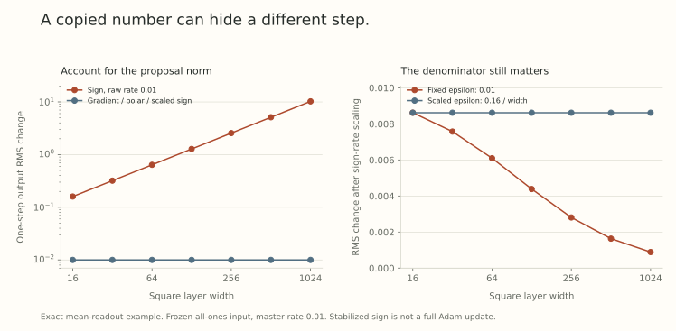

Suppose a learning rate works at width 256. You make the hidden layers four times wider. Should you copy the number?
Before answering, we need to know what that number multiplies. A raw gradient, an entrywise sign, and a matrix polar factor have different width dependence. Even if their implementations call the multiplier a learning rate, equal numbers can produce very different feature changes.
The useful transferable quantity is often a master rate whose layerwise conversion accounts for those differences. We can see the mechanism in an exact one-step calculation, then separate it from the much stronger claim that the best training hyperparameter transfers.
Start with the units of a layer change
For \(W\in\mathbb R^{m\times n}\), measure incoming and outgoing features in RMS norm. Part 5 derived
\[ \|\Delta Wh\|_{\rm RMS} \leq\sqrt{\frac nm}\|\Delta W\|_{\rm op}\|h\|_{\rm RMS}. \]
A matrix budget that gives a width-independent upper bound on RMS motion is therefore
\[ N(\Delta W)=\sqrt{\frac nm}\|\Delta W\|_{\rm op}. \]
Write the raw optimizer step as \(\Delta W=-\eta_{\rm raw}\Psi\). If the proposal has nonzero spectral norm \(q(m,n)\), then setting
\[ \eta_{\rm raw} =\bar\eta\frac{\sqrt{m/n}}{q(m,n)} \]
gives \(N(\Delta W)=\bar\eta\). If we know only an asymptotic scale for \(q\), the resulting statement is an asymptotic scale too, not this exact equality.
This quotient is useful because it makes the dependency visible: initialization and optimizer details determine proposal scales, while \(\bar\eta\) specifies the common budget. In practical parametrizations, one normally derives fixed shape factors rather than measuring and cancelling the exact proposal norm at every step. Those are distinct algorithms.
A spectral upper bound does not force feature motion
Let \(u,v,z\) be unit vectors, with \(z\perp v\), and let \(h=\sqrt n\,v\). The matrices
\[ D_1=uv^\top,\qquad D_2=uz^\top \]
both have spectral norm one. Yet
\[ D_1h=\sqrt n\,u,\qquad D_2h=0. \]
The budget allows a maximal change and a zero change. To get a lower bound on feature motion, we also need overlap with the actual incoming feature.
A single-example gradient supplies a clear form of alignment. If the derivative with respect to the layer output is \(\delta\), then
\[ G=\delta h^\top, \qquad Gh=\delta\|h\|_2^2, \qquad \|Gh\|_2=\|G\|_{\rm op}\|h\|_2. \]
The same example that created the update saturates the operator bound. A different example need not. A minibatch sum or a history-dependent optimizer changes the geometry again.
In a moving network,
\[ \Delta(Wh)=\Delta Wh+W\Delta h+\Delta W\Delta h. \]
Even a large first term can be cancelled by the other terms. A sufficient lower-bound condition is
\[ \|\Delta(Wh)\|_2\geq c\|\Delta Wh\|_2 \]
for a width-independent \(c>0\). An upper bound alone cannot supply this condition. This distinction is central to reading A Spectral Condition for Feature Learning, especially its single-example argument and extensions in Section 3.
Three update maps on the same exact example
Use a square width-\(d\) layer. Let the incoming feature be \(h=\mathbf1_d\), and choose an output derivative \(\delta=\mathbf1_d/d\). This derivative arises, for example, from the mean readout \(\ell(z)=d^{-1}\sum_i z_i\). Then
\[ G=\frac1d\mathbf1_d\mathbf1_d^\top. \]
This rank-one matrix has a single nonzero singular value equal to one. Its partial polar factor is itself. Its entrywise sign is the all-ones matrix.
Keeping the input fixed, the resulting output RMS changes are
\[ \begin{array}{c|c|c} \text{proposal }\Psi&\|\Psi\|_{\rm op}&\|\Delta Wh\|_{\rm RMS}\\ \hline G&1&\eta_{\rm raw}\\ \operatorname{polar}(G)&1&\eta_{\rm raw}\\ \operatorname{sign}(G)&d&d\eta_{\rm raw} \end{array} \]
Thus gradient and polar steps use \(\eta_{\rm raw}=\bar\eta\) in this example, while sign steps use \(\eta_{\rm raw}=\bar\eta/d\). For \(\bar\eta=0.01\):
| Width | Gradient or polar | Sign with raw rate 0.01 | Sign with raw rate \(0.01/d\) |
|---|---|---|---|
| 16 | 0.01 | 0.16 | 0.01 |
| 64 | 0.01 | 0.64 | 0.01 |
| 256 | 0.01 | 2.56 | 0.01 |
| 1024 | 0.01 | 10.24 | 0.01 |
Every entry is an exact one-step feature change. The example has no optimizer history, no training trajectory, and no validation loss. It isolates the shape factor that a raw rate must compensate.

The rectangular version is also instructive. With \(h=\mathbf1_n\) and \(\delta=\mathbf1_m/m\), the gradient spectral norm is \(\sqrt{n/m}\). Rates producing the same RMS change \(\bar\eta\) are
\[ \begin{aligned} \eta_{\rm gradient}&=\bar\eta\,m/n,\\ \eta_{\rm polar}&=\bar\eta\sqrt{m/n},\\ \eta_{\rm sign}&=\bar\eta/n. \end{aligned} \]
These formulas follow from this particular mean-readout example. They are not a table for every layer of every optimizer. Input, hidden, and readout layers can have different dimensional roles, and an implementation may already include a shape factor inside its proposal.
A small stabilizer can change the width regime
Replace the sign by the elementwise map
\[ \Psi_{ij}=\frac{G_{ij}}{|G_{ij}|+\epsilon},\qquad\epsilon\geq0. \]
This is a stabilized sign map, not a complete Adam update. In our square example, each entry equals \(1/(1+d\epsilon)\). Even with the sign rate \(\bar\eta/d\), the RMS feature change becomes
\[ \frac{\bar\eta}{1+d\epsilon}. \]
For fixed positive \(\epsilon\), it vanishes as width grows. If instead \(\epsilon=c/d\), the change is \(\bar\eta/(1+c)\), independent of width.
The figure uses \(\epsilon=0.01\) and the matched scaled choice \(0.16/d\), which agree at width 16. The large stabilizer makes the effect visible. These values are illustrative, not recommended Adam settings. Actual moment estimates, bias corrections, and placement before or after a square root require their own formula.
Tensor Programs V, Appendix B.3, explicitly discusses when a non-negligible Adam epsilon needs width scaling. The broader lesson is that the asymptotic regime belongs to the entire denominator. A constant called tiny can become dominant relative to a shrinking gradient.
Initialization is a separate calculation
The update quotient assumes features and proposals have the scales used in its derivation. Initialization helps establish those conditions, but it does not determine the learning-rate rule by itself.
For a square Gaussian hidden matrix, entry standard deviation proportional to \(d^{-1/2}\) gives spectral scale of order one. A rectangular matrix needs its aspect ratio considered. A readout with a fixed output dimension is different again. Even at the same initial weight scale, changing the loss reduction from a mean to a sum changes the gradient in our example by a factor \(d\).
This is why a width-transfer recipe needs to declare parameter multipliers, initialization, forward scaling, loss reduction, and optimizer equations together. Extending \(\mu\)P, Section 4.1, uses the proposal-norm quotient as a generic organizing calculation. Applying it to a new optimizer still requires its proposal norm and the assumptions behind any claimed lower bounds. A history buffer can change rank and alignment. Damping can change the active scale.
Width and depth are also different questions. Part 16 used a specific \(1/L\) averaged residual construction with sensitivity assumptions. It did not derive a general depth-transfer rule for ordinary Transformers. Changing depth, batch size, or training duration alongside width introduces more variables than a width-only argument controls.
What would successful transfer actually measure?
Let \(V_d(\bar\eta)\) be validation loss at width \(d\), after a declared training budget, using all layerwise conversions of the master rate. Tune \(\bar\eta_0\) at a source width. For a target width, define grid transfer regret
\[ R(d)=V_d(\bar\eta_0)-\min_{\bar\eta\in\mathcal G}V_d(\bar\eta), \]
where the comparison grid \(\mathcal G\) includes \(\bar\eta_0\). This quantity is nonnegative. A small value means the transferred rate performs near the best rate on that tested grid and budget.
A convincing study reports the whole target curve, repeated seeds, uncertainty, and whether the optimum hits a grid boundary. It holds data, schedule conventions, token budgets, and tuning opportunities to a declared comparison. If a boundary wins, expand the grid before treating it as an optimum. A grid minimum is not the unknown optimum over all positive rates.
Stable activation RMS and width-independent one-step motion are useful diagnostics. Neither guarantees low transfer regret or useful learned representations. Tensor Programs V studies actual hyperparameter transfer, beyond the algebraic example here. We have not run a new training sweep for this post.
Try changing width without changing the budget
- At square width 512, what raw sign rate gives RMS change \(0.02\) in our example?
- For \(m=64\), \(n=256\), and \(\bar\eta=0.01\), compute the three rectangular rates.
- With \(d=1000\), \(\epsilon=0.001\), and \(\bar\eta=0.01\), what change does the stabilized sign map produce?
- If transferred validation loss is 2.31 and the best tested target loss is 2.29, what is grid transfer regret? Does a feature RMS plot determine it?
Answer sketches
- \(0.02/512=0.0000390625\).
- Gradient: \(0.0025\). Polar: \(0.005\). Sign: \(0.0000390625\).
- \(0.01/(1+1)=0.005\).
- \(0.02\). It requires validation losses, so a feature RMS plot alone does not determine it.
Yo twin, go read…
A Spectral Condition for Feature Learning, Sections 3 and 4, connects spectral scaling to feature motion under its alignment, non-cancellation, and network assumptions. Its star notation denotes spectral norm. Here \(\|\cdot\|_{\rm op}\) keeps that convention explicit.
Extending \(\mu\)P: Spectral Conditions for Feature Learning Across Optimizers, Sections 3.3 and 4.1, organizes optimizer-dependent rate scalings. The conditional quotient does not remove the need to check each optimizer’s history and regularization regime.
Tensor Programs V: Tuning Large Neural Networks via Zero-Shot Hyperparameter Transfer, Sections 4 and 6 and Appendix B, treats parametrization, transfer, limitations, and optimizer conventions. Our mean-readout matrices and stabilized-sign curves are direct calculations, not reproductions of its experiments or full infinite-width results.